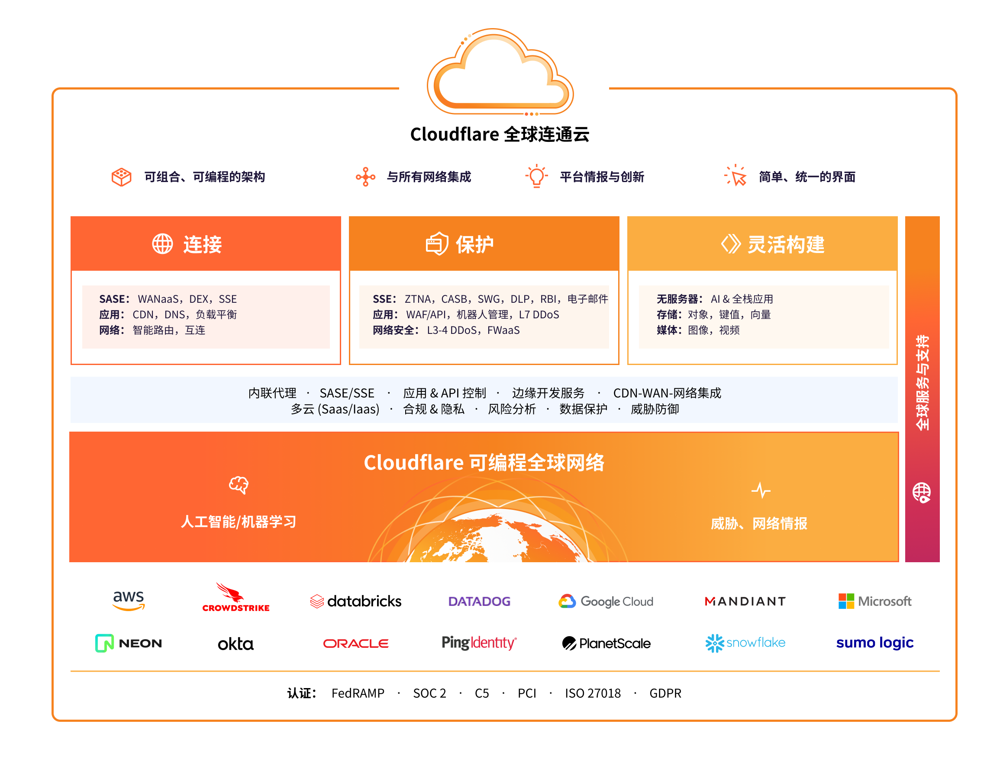

深度剖析 Cloudflare：性能、安全与全球分发的解决方案
在今天的互联网世界中，网站和应用程序的性能与安全性越来越受到重视。随着全球化和数据流量的不断增加，如何确保网站在全球范围内的快速加载和安全性成为了开发者和企业面临的重要挑战。Cloudflare，这个领先的互联网安全和性能优化服务平台，已经成为了众多企业和开发者的首选解决方案。
本文将从技术角度深入探讨 Cloudflare 的工作原理、优势、以及它如何解决网络性能和安全性问题。

一、Cloudflare 概述
Cloudflare 成立于 2009 年，最初专注于提供内容分发网络（CDN）服务，随后逐步扩展其产品线，提供包括网络安全、DNS 服务、Web 应用防火墙（WAF）、DDoS 防护、负载均衡、SSL/TLS 加密等一系列解决方案。它的服务平台基于全球分布的数据中心，覆盖全球超过 200 个地点，帮助网站和应用程序提升性能并防范安全威胁。
二、Cloudflare 解决的主要问题
1. 网站性能瓶颈
随着用户基数的增加，网站需要应对大量的访问请求。尤其是对于跨国网站，用户和服务器之间的地理距离可能会导致较长的延迟和较低的访问速度。传统的单一服务器无法满足快速加载和高可用性需求。
Cloudflare 的解决方案：
Cloudflare 通过其全球分布的 CDN 网络将网站内容缓存到离用户更近的服务器上，确保用户能够从最近的节点获取静态资源。这不仅能有效减少网页加载的延迟，还能减少原始服务器的压力，优化了全球范围内的访问速度。
2. DDoS 攻击
分布式拒绝服务（DDoS）攻击已成为网络安全领域最常见的攻击之一，攻击者通过向目标服务器发送大量请求，导致服务器崩溃或无法正常提供服务。随着互联网服务的普及，DDoS 攻击的规模和复杂性日益增加。
Cloudflare 的解决方案：
Cloudflare 提供了强大的 DDoS 防护系统，能够实时检测并缓解大规模的 DDoS 攻击。通过其分布式的基础设施，Cloudflare 可以将恶意流量分散到全球各地的数据中心，从而有效减轻单一节点的压力，保证网站的持续可用性。
3. Web 安全威胁
在如今的互联网上，Web 应用面临着多种安全威胁，包括 SQL 注入、跨站脚本（XSS）、跨站请求伪造（CSRF）等攻击。这些漏洞可以被攻击者利用，获取用户敏感信息、破坏数据完整性或破坏应用程序功能。
Cloudflare 的解决方案：
Cloudflare 的 Web 应用防火墙（WAF）提供了强大的实时防护。通过不断更新的安全规则和智能机器学习算法，Cloudflare 可以自动检测并拦截常见的 Web 应用攻击。WAF 可以有效防止 SQL 注入、XSS、恶意爬虫等攻击，保护网站和应用程序免受漏洞利用。
4. SSL/TLS 加密不足
许多网站仍然没有启用 HTTPS，加密通信不完整，容易受到中间人攻击（MITM）。加密不仅能保护用户数据的安全，还能提升搜索引擎排名，因为 Google 等搜索引擎已经将 HTTPS 作为排名因素之一。
Cloudflare 的解决方案：
Cloudflare 提供了免费的 SSL/TLS 加密，帮助网站启用 HTTPS，确保用户数据在传输过程中的安全性。Cloudflare 的 SSL/TLS 加密解决方案不仅简单易配置，而且提供了强大的性能优化，支持现代加密算法，确保了高效和安全的通信。
三、Cloudflare 的关键技术优势
1. 全球分布的基础设施
Cloudflare 拥有超过 200 个数据中心，分布在全球多个国家和地区。这种全球性网络确保了用户无论身处何地，都能通过离其最近的节点访问网站，从而大幅提升网站的加载速度。
- 内容分发网络（CDN）：Cloudflare 在全球范围内缓存静态资源，减少了资源传输的延迟，确保网站可以快速加载。
- 智能路由：Cloudflare 自动选择最优的传输路径，避免拥堵或网络故障，保证数据传输的稳定性和快速性。
2. 高可用性与容错能力
Cloudflare 的全球网络确保了即使部分地区的服务器发生故障，其他区域的数据中心仍能继续提供服务。这种多点分布的架构提升了系统的容错能力和整体可用性。
- 自动故障转移：Cloudflare 提供自动的故障转移和负载均衡机制，确保在高流量或服务器故障时，网站依然保持高可用性。
3. 灵活的 DNS 管理
Cloudflare 提供了一个高性能的 DNS 服务，能够加速域名解析，减少 DNS 查找延迟。Cloudflare 的 DNS 服务通过其分布式网络提高了解析速度，并且具备强大的抗攻击能力。
- DNSSEC：Cloudflare 支持 DNS 安全扩展（DNSSEC），确保域名解析过程中数据不被篡改，增强了 DNS 查询的安全性。
4. 安全性与防护
Cloudflare 的 Web 应用防火墙（WAF）、DDoS 防护、Bot 管理、SSL/TLS 加密等技术，共同保障了网站和应用程序的安全。Cloudflare 的安全服务可以有效抵御各种常见的攻击，包括 SQL 注入、跨站脚本攻击（XSS）、暴力破解等。
5. 简易的集成与管理
Cloudflare 提供了简单易用的控制面板，允许用户通过 DNS 修改等方式快速集成 Cloudflare 服务。此外，Cloudflare 还提供了强大的 API 接口，方便开发者进行自动化管理和定制化配置。
四、适用场景与案例
Cloudflare 适用于各种规模的网站和应用，从个人博客到大型企业网站，都可以从中受益。以下是几个典型的应用场景：
- 全球化企业网站：对于跨国企业，Cloudflare 的 CDN 和智能路由技术能够确保全球用户都能享受快速、稳定的访问体验。
- 电子商务平台：电商平台需要处理大量的并发访问和敏感的用户数据，Cloudflare 的性能优化和安全防护是保证电商平台正常运营的重要保障。
- SaaS 应用：SaaS 提供商往往面临着复杂的网络环境和不断变化的安全威胁，Cloudflare 提供的全方位保护帮助 SaaS 应用保持高效、安全的运营。
五、结语
Cloudflare 不仅是一个 CDN 服务提供商，更是一个综合性的互联网安全和性能优化平台。通过全球分布的网络、强大的 DDoS 防护、Web 安全服务以及简便的集成方式，Cloudflare 为网站提供了一个全面的加速和保护方案。无论是提升网站性能，还是增强网站安全，Cloudflare 都为开发者和企业提供了一个值得信赖的解决方案。